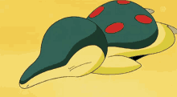
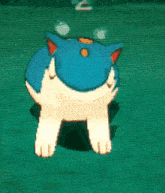

Cyndaquil and its evolution line has red holes on its back/head that it can shoot fire out of to scare of foes. Cyndaquil will hide itself by curling up into a small ball and was first seen in Pokemon Gold/Silver.
Cyndaquil resembles a shrew or echidna due to its long snout and small or closed eyes. Cyndaquil has the hidden ability: Flash Fire and can only be obtained by special methods or breeding. Flash Fire will power up Cyndaquils fire type moves if hit by one.




Quilava seems to be based off a weasel because of its long body and stands about 2'11" tall and weighing 41.9 average. Quilava is faster and more agressive than Cyndaquil, it does not hesitate to battle.
Typhlosion hides behind its heat it creates with its fire. When a Typhlosion is angered, it can cause objects to burst into flames. While Typhlosion stands on two legs, it still gets around on all fours like Quilava.
>Images<